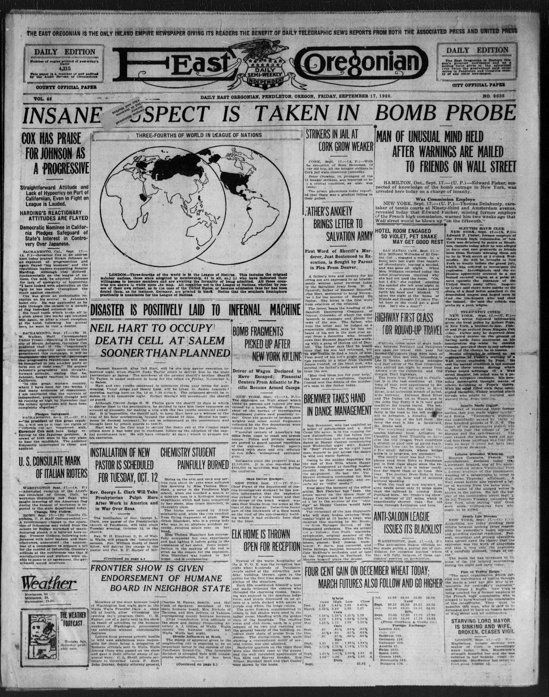

HN-424: Wall Street coverage revises the toll and identifies a bomb
HN-424 · September 17, 1920 · War, Conflict & Security > Terrorism & Political Violence > Bombings

page scanRecorded finding
17 September Albany Daily Democrat: bomb conclusion attributed to investigator, 36 dead and ~200 hurt.
Discovery narrative
Source: Indianapolis Times, p. 1 — original page; FBI case history.
Report: The follow-up headline put the bomb death toll at 38 and damage at $2.5 million, a change from the previous day's accident speculation.
Assessment: This is a revision of HN-423, not a separate explosion. The FBI confirms a deadly bomb attack but describes the case as unsolved. Preliminary casualty and financial damage figures should remain labeled as newspaper figures, not independently audited final totals.
Identity-review candidate peers: HN-423:High
Curated audit flag
Class: Revision/retraction (R)
Recorded difference/concern: 17 September Albany Daily Democrat: bomb conclusion attributed to investigator, 36 dead and ~200 hurt.
Assessment: Later phase of HN-423, not distinct attack; cause attributed to contemporary investigator.
Source links: https://oregonnews.uoregon.edu/lccn/sn96088450/1920-09-17/ed-1/seq-1/ocr/ https://oregonnews.uoregon.edu/lccn/sn88086023/1920-09-17/ed-1/seq-1/ocr/ https://oregonnews.uoregon.edu/lccn/sn85042444/1920-09-17/ed-1/seq-2/ocr/
Original archive images (4)
Authentic images retrieved from Historic Oregon Newspapers (University of Oregon) and Hoosier State Chronicles (Indiana State Library). Article crops are located using the archive's own OCR word coordinates and rendered at native crop resolution; article clips are assembled from the archive's own article-block images; page images marked "archive tiles" are stitched from the archive's own tiled page service at its 256-px tile cap; page images marked "issue PDF" are single pages rasterised from the archive's own issue PDF, with the page chosen by matching the headline against the PDF's text layer; page scans are reduced-size access renditions. No images were generated, mocked, or retouched.

Historic Oregon Newspapers (University of Oregon)
Open larger view · Archive viewer (full resolution)

Historic Oregon Newspapers (University of Oregon)
Open larger view · Archive viewer (full resolution)

Hoosier State Chronicles (Indiana State Library)
Open larger view · Archive viewer (full resolution)

Historic Oregon Newspapers (University of Oregon)
Open larger view · Archive viewer (full resolution)
Source acquisition
Status: Archive images acquired
Authentic archive-owned image renditions were retrieved for this record and are displayed above. The source-acquisition manifest preserves the original pre-acquisition feasibility assessment.
Original seed
URL (preserved verbatim): https://newspapers.library.in.gov/?a=d&d=IPT19200917.1.1
Saved research report: Historical_Newspaper_Event_Research_403-427_2026-10-23.md
Evidence note: A newspaper report means a historical publication made a claim; it does not establish that claim as fact. Contemporary reporting is separated from later scholarly context and our own assessment.